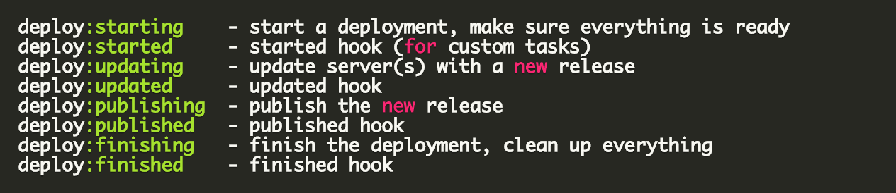
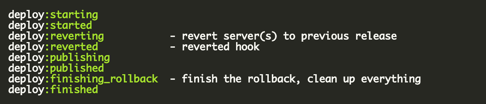

Lightning talk by Jean-Fei Taing / @jeanfei - 20/01/2017
Deploy Flow 
Rollback Flow 
set :deploy_to, '/var/www/my_app_name'
├── current -> /var/www/my_app_name/releases/20170119235721/
├── releases
│ ├── 20170119205721
│ ├── 20170119233430
│ ├── 20170119234608
│ ├── 20170119234808
│ └── 20170119235721
├── repo
│ └── VCS related data
├── revisions.log
└── shared
└── linked_files and linked_dirs
# Création de 2 environnements
$ bundle exec cap install STAGES=dev,prod
├── Capfile
└── config
├── deploy
│ ├── dev.rb # Configurations spécifiques à la dev
│ └── prod.rb # Configurations spécifiques à la prod
└── deploy.rb # Configurations générales
set :application, "capistrano-lightning-talk"
set :repo_url, "git@github.com:jeanfei/capistrano-lightning-talk.git"
config/deploy/dev.rb
server "dev.capistrano-lightning-talk", user: "vagrant", roles: %w{app web}
set :deploy_to, '/var/www/dev.capistrano-lightning-talk'
set :branch, 'develop'
config/deploy/prod.rb
server "capistrano-lightning-talk", user: "vagrant", roles: %w{app web}
set :deploy_to, '/var/www/capistrano-lightning-talk'
set :branch, 'master'
$ bundle exec cap dev deploy
$ bundle exec cap prod deploy
$ bundle exec cap prod deploy:rollback
# lib/capistrano/tasks/app.rake
namespace :app do
namespace :security do
desc 'Override robots.txt file'
task :disallow_robots do
on roles(:web) do
upload! "templates/robots.txt", "#{release_path}/src/web/robots.txt"
end
end
end
end
# config/deploy/dev.rb
namespace :deploy do
# Replace robots.txt to disallow robots indexing.
after :updated, 'app:security:disallow_robots'
end
Lightning talk by Jean-Fei Taing / @jeanfei - 20/01/2017